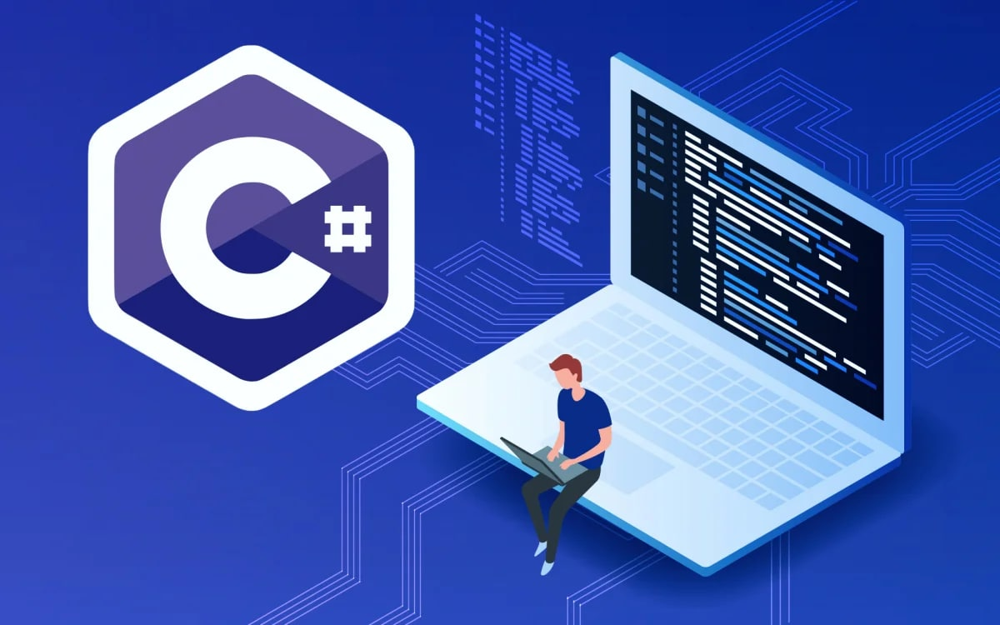
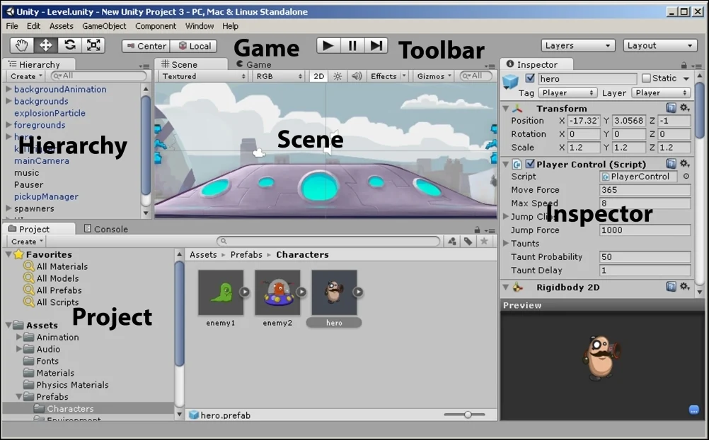
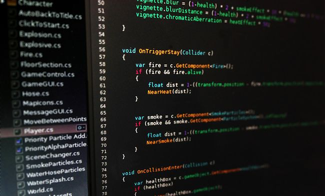
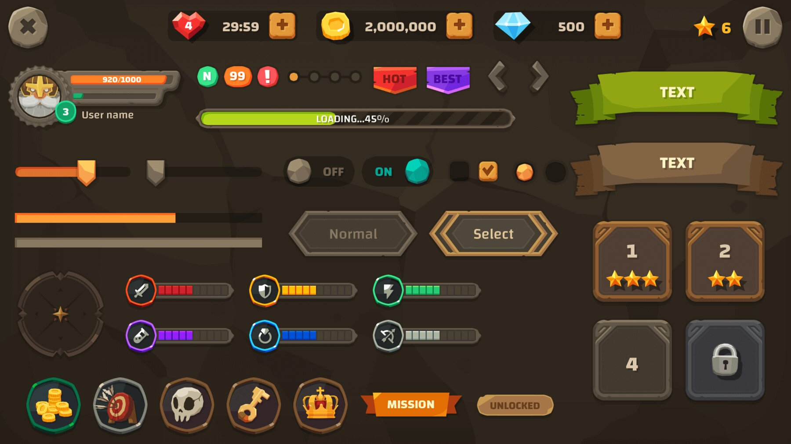
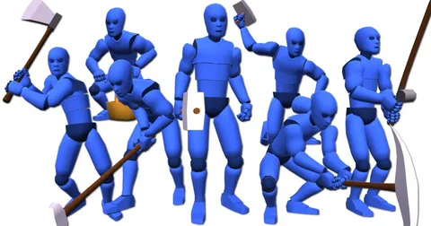
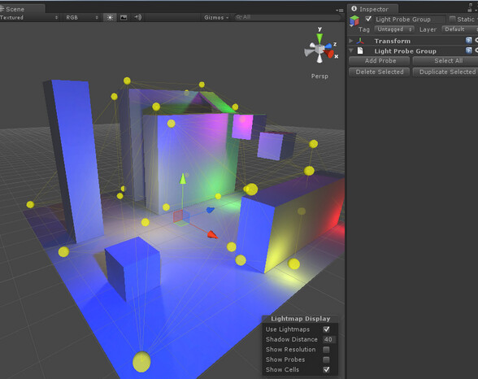
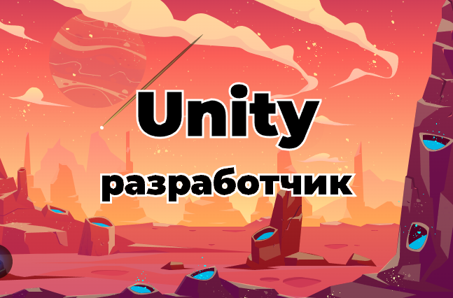

Основы программирования на C#
Синтаксис и базовые конструкции включают переменные и типы данных, операторы, условные операторы, циклы, функции и методы (определение и вызов методов, параметры и возвращаемые значения), а также объектно-ориентированное программирование (ООП), которое охватывает классы и объекты, наследование, инкапсуляцию и полиморфизм.
- Типы данных: int, long, short, float, double, bool, string
- Операторы: +, -, *, /, &&, ||, !, ==, !=, <, >, <=, >=
- Условные операторы: if, eles if, else, switch, case, default
- Циклы: for, while, do while

Основы Unity
Установка и настройка Unity включают установку Unity Hub и Unity Editor, создание нового проекта, а также изучение интерфейса Unity, который состоит из основных окон и навигации и управления сценами. Основные компоненты Unity включают GameObject и компоненты, Transform (позиция, вращение, масштаб), а также камеры и освещение.
- Интерфейс Unity: Scene, Game, inspector, Project, Hierarchy
- Основные компоненты: GameObject, Transform, Camera, Light

Скриптинг в Unity
Создание и добавление скриптов включает создание нового скрипта и добавление его к GameObject, а также изучение основных методов Unity, таких как Start(), Update(), FixedUpdate() и LateUpdate(). Взаимодействие с компонентами включает получение и изменение компонентов (GetComponent, AddComponent) и работу с Transform.

Работа с физикой и вводом
Физика включает работу с Rigidbody и Collider, применение сил и импульсов, а также обработку столкновений (OnCollisionEnter, OnTriggerEnter). Ввод охватывает обработку клавиатуры и мыши, а также джойстиков и других устройств ввода. Работа с интерфейсом пользователя (UI) включает создание и настройку UI, таких как Canvas и UI элементы (Button, Text, Image), работу с UI в скриптах, а также обработку событий UI (нажатия кнопок, изменения значений).
Работа с интерфейсом пользователя (UI)
Создание и настройка UI включают работу с Canvas и UI элементами (Button, Text, Image), а также взаимодействие с UI в скриптах и обработку событий UI (нажатия кнопок, изменения значений). Работа с анимацией и аудио охватывает создание и настройку анимаций, использование анимационных контроллеров и состояний, а также добавление и настройку аудио источников и управление аудио в скриптах.

Работа с анимацией и аудио
Анимация включает создание и настройку анимаций, а также работу с анимационными контроллерами и состояниями. Аудио охватывает добавление и настройку аудио источников, а также управление аудио в скриптах.

Работа с графикой и освещением
Материалы и шейдеры включают создание и настройку материалов, а также основы работы с шейдерами. Освещение охватывает настройку источников света, работу с глобальным освещением и пост-обработкой.

Проектирование и оптимизация
Архитектура проекта включает организацию сцен и префабов, а также управление ресурсами и ассетами. Оптимизация производительности охватывает профилирование и оптимизацию кода, а также оптимизацию графики и физики.
Расширенные темы
Сетевое программирование включает основы сетевого взаимодействия и создание многопользовательских игр. Интеграция с другими сервисами охватывает работу с базами данных, а также интеграцию с социальными сетями и платформами.
Практика и проекты
Создание простых проектов включает разработку простых 2D и 3D игр, а также реализацию базовых механик, таких как прыжки, стрельба и движение. Участие в джемах и хакатонах охватывает создание игр в ограниченные сроки и работу в команде.
- 2D игра - легче
- 3D игра - сложнее
